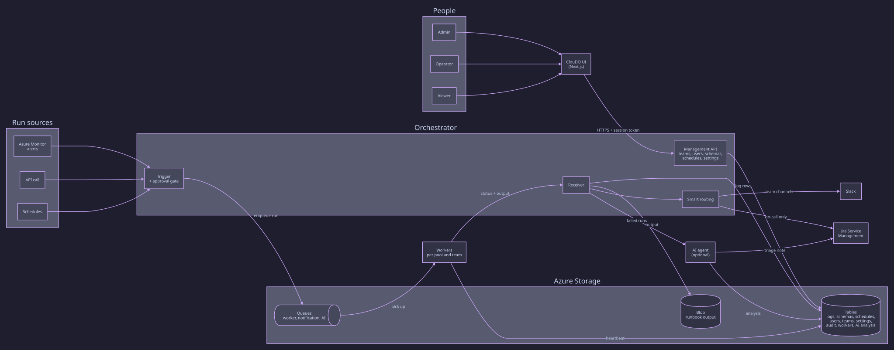
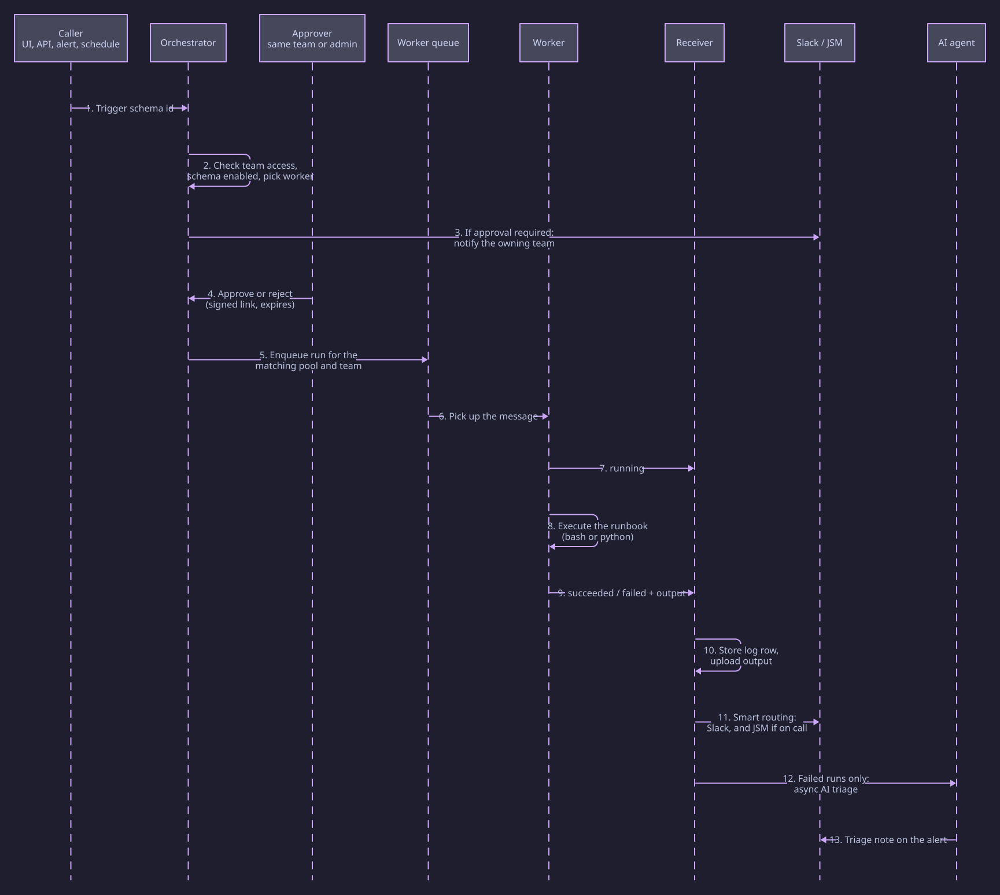
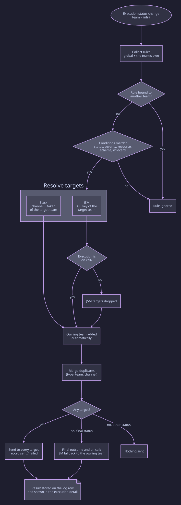

Overview
ClouDO is a control plane for operational runbooks. You describe what can be run, who can run it and who is told when it runs; ClouDO does the rest.
Manual and event-driven runs
Trigger a runbook from the UI, an API call, a schedule or an
alert such as Azure Monitor. Runbooks are plain
bash or python scripts.
Approval gate
Sensitive runbooks wait for an authorized person, with signed and expiring approve/reject links.
Team-aware by design
Every resource belongs to a team. People act on their own team's resources, administrators see everything.
Smart routing
Rules decide where each execution is notified. Every matching rule applies, so one event can reach several teams.
JSM alerts for on-call runs
Only executions flagged on call open Jira Service Management alerts.
AI triage
An optional agent analyzes failed runs and adds a summary, a probable root cause and recommended actions.
Core concepts
| Concept | What it is |
|---|---|
| Runbook |
A bash or python script stored
with the workers, for example
azure/application_gateway_info.sh.
|
| Schema | The definition that maps an id to a runbook: arguments, worker pool, team, approval requirement, on-call flag and tags. |
| Worker | A node that listens on a queue, runs runbooks and reports status. Workers register themselves with a heartbeat and belong to a pool and a team. |
| Team |
The ownership unit of schemas, schedules, users and workers.
The built-in default team holds shared
resources.
|
| Schedule | A cron expression that triggers a runbook on a worker pool, for a team. |
| Execution |
One run of a schema, identified by an ExecId,
with a log row for every status change.
|
| Routing rule | A condition plus a list of Slack and JSM targets, evaluated for every execution status change. |
Architecture
Small, separated components that communicate through storage tables and queues.

docs/diagrams/architecture.d2.
| Component | Responsibility |
|---|---|
| UI | Next.js console for discovery, execution, approvals, routing configuration, fleet and audit views. It talks to the orchestrator through an authenticated proxy. |
| Orchestrator |
Authenticates requests, enforces team access, validates and
enqueues runs, manages approvals, receives status updates
and applies smart routing. Served by FastAPI under
/api, also deployable as Azure Functions.
|
| Workers | Pull run messages, execute the runbook, stream status and output back, and send a heartbeat so they appear in the registry. |
| Storage | Azure Table Storage for schemas, schedules, users, teams, settings, logs, audit and AI analysis; queues for work, notifications and AI analysis; blobs for run output. |
| AI agent | Optional service that consumes failed executions and produces a triage analysis. |
Execution lifecycle
What happens from the moment a run is requested to the moment people are notified.

docs/diagrams/lifecycle.d2.
-
Request. A caller triggers a schema id with
/api/Trigger?id=<schema>, from the UI, a script, an alert webhook or a schedule. - Validation. The orchestrator checks the session, the caller's team access, that the schema exists and is enabled, and builds the context (resource information, severity, initiator).
-
Worker selection. A worker queue is chosen
among the registered workers that offer the schema's capability
and belong to the schema's team or the shared
defaultteam. -
Approval (optional). If the schema requires
approval, the run is stored as
pendingand the owning team is notified with signed approve/reject links. Nothing runs until someone decides. -
Run. The message is enqueued. The worker picks
it up, reports
running, executes the script with the resource information as environment variables, then reportssucceededorfailedwith the output. - Record. The Receiver stores a log row for every status, uploads long output to blob storage and keeps the latest state per execution for the UI.
- Notify. Smart routing applies the rules and sends Slack and JSM notifications. The outcome of each target is saved with the log row.
- Triage. Failed or errored executions are forwarded to the AI agent, when enabled, which adds a note to the alert and stores the analysis.
Statuses you will see: pending,
accepted, running,
succeeded, failed, error,
rejected, stopped, skipped,
routed.
Teams and roles
Every resource belongs to a team; access follows the team.
| Role | Can do |
|---|---|
| Admin |
Manage teams and users, assign teams, see all teams' users,
audit and resources, change any schema or schedule,
configure the shared default routing and every
team's routing.
|
| Operator | Run, approve and stop executions of their own team, create and change their team's schemas and schedules, edit their team's routing (channel, tokens, rules and targets). |
| Viewer | Read-only access to their team's resources, plus the shared fleet view. |
| Pending | A freshly registered account waiting for an administrator to approve it. |
Rules of visibility and ownership
-
People see the resources of their own team and of the shared
defaultteam. Administrators can switch the sidebar scope to see every team; the users and audit pages always show all teams to administrators. - Worker nodes and in-flight executions are visible to everybody. A team can stop only its own executions; administrators can stop any.
-
Schemas and schedules can be changed or deleted only by
administrators and by members of the owning team. Resources in
defaultare therefore protected from other teams. - Only administrators can assign a resource to a team or move a user to another team.
- Schemas and schedules created by Terraform are marked as managed and are read-only in the UI.
Approval gate
Set require_approval on a schema to put its
executions behind a gate.
-
The execution is stored as
pendingand the owning team's Slack channel is notified, with a link to the execution. JSM is notified only when the schema is on call. -
The approve and reject links carry a signed payload (HMAC) that
includes the team and expires after
APPROVAL_TTL_MINminutes (default 60). -
People see only the requests of their own team and of
default; administrators see all teams when the scope is enabled. -
Approving enqueues the run; rejecting records
rejected. Both are written to the audit log with the approver's name, and the decision is notified back. - A decision on a request that already has one is refused.
Smart routing
Decides who is notified, on which integration, for every execution status change.

docs/diagrams/routing.d2.
How rules are evaluated
- Multi-match. Every matching rule contributes targets. Rules are not a cascade: the first match does not stop the others.
- Scope. A rule bound to a team applies only to executions of that team. A rule without a team applies to every execution.
-
Conditions. All fields in
whenmust match. Supported fields:statusIn,severityMin,severityMax(Sev0 is the most critical),resourceGroup,resourceGroupPrefix,resourceId,resourceName,subscriptionId,namespace,schemaName,oncall,isAlert, andany: "*"to match everything. -
Final outcomes only. By default a rule matches
only final statuses (
succeeded,failed,error,timeout,routed). SetfinalOnly: falseto include the others. - Targets. Each target is Slack or JSM, with a team and an optional Slack channel. A target can point to another team, which then uses its own Slack token, channel and JSM API key.
- Owning team. If a rule has a Slack target and none for the execution's own team, a Slack target for the owning team is added. The same applies to JSM, when an API key exists.
- Duplicates with the same type, team and channel are merged.
JSM only for on-call executions
JSM targets are dropped when the schema is not flagged
oncall. This also removes the JSM fallback described
below.
Fallback
If no rule produces a target and the status is final, an on-call execution opens a JSM alert for the owning team. If every target fails, the same fallback is attempted once. Each step is logged.
Credentials
Secrets are never stored in the rule JSON. They are resolved by
team name: SLACK_TOKEN_<TEAM> and
JSM_API_KEY_<TEAM>, falling back to the
_DEFAULT values.
Example
{
"version": 2,
"defaults": { "slack": { "channel": "#cloudo-default" } },
"teams": {
"infra": { "slack": { "channel": "#infra-alerts" } },
"core": { "slack": { "channel": "#core-alerts" } }
},
"rules": [
{
"team": "infra",
"when": { "statusIn": ["failed", "error"], "severityMax": "Sev2" },
"then": [
{ "type": "slack", "team": "infra" },
{ "type": "slack", "team": "core" },
{ "type": "jsm", "team": "infra" }
]
}
]
}
A failed on-call execution of an infra schema
notifies #infra-alerts, #core-alerts and
opens an infra JSM alert. A schema that is not on
call gets only the two Slack messages.
CloudoSettings table (GlobalConfig /
ROUTING_RULES) and cached for 60 seconds. Saving it
from the UI clears the cache.
Jira Service Management
- Alerts use the schema id as alias, so repeated failures of the same schema are de-duplicated while the alert is open.
-
A closed alert is never reused. ClouDO checks the state of the
alias and, when it is closed, opens the next one in the chain
(
alias,alias-2,alias-3, …). - When a monitor reports Resolved, the latest open alert of the chain is closed.
- Payloads are trimmed to the JSM limits (message, description, tags and details) and details are flattened to strings.
- The API key used must be allowed to read alerts, otherwise ClouDO falls back to the plain alias.
AI triage
When AI_AGENT_ENABLED is on, failed and errored
executions are queued for the agent. It reads the output and the
resource context and produces a summary, a probable root cause,
recommended actions and a confidence level. The note is added to
the matching JSM alert and the analysis is shown in the execution
detail, scoped to the owning team. Manual test runs from the
studio are skipped.
Schedules
A schedule triggers a runbook on a cron expression for a worker pool and a team. The scheduler picks the worker queue by pool and team, exactly like a manual run, and the execution is tracked and notified the same way. Schedules created by Terraform are locked in the UI.
Observability
- Executions. Search by date, status, id or text. The detail shows a snapshot, the timeline of statuses, the process identity, the resource information, the output stream and a Notifications section.
- Notifications section. For every status change that notified someone it lists each target: integration (Slack or JSM), team, channel, sent or failed, and the error when there is one. It also shows why the target was chosen (matched rule, JSM fallback, approval request).
- Workers. Fleet view with team, queue, region and heartbeat; the runtime inspector lists running processes with their team and lets a team stop its own.
- Audit. Every change is recorded with operator, action, target and team, and can be filtered by team and date. Administrators always see all teams.
- Time. Audit entries and worker heartbeats are shown in Europe/Rome time.
Writing runbooks
Runbooks are bash or python scripts.
When an alert comes from AKS they receive these environment
variables:
| Variable | Meaning |
|---|---|
RESOURCE_ID |
Full Azure resource id |
RESOURCE_RG |
Resource group name |
RESOURCE_NAME |
Resource name |
AKS_NAMESPACE, AKS_POD,
AKS_DEPLOYMENT, AKS_JOB,
AKS_HPA
|
Kubernetes objects named by the alert, when available |
MONITOR_CONDITION |
Fired or Resolved |
The worker image already includes the Azure CLI and the Python Azure libraries. To use the worker's managed identity, start your script with:
# Ensure Azure login
if ! az account show >/dev/null 2>&1; then
echo "Logging into Azure..."
az login --identity --client-id "$AZURE_CLIENT_ID" >/dev/null
fiDescribing the runbook
[
{
"partition_key": "infra",
"entity": [
{
"id": "cdn-apim-switch",
"name": "Switch CDN to APIM",
"description": "Switch static content provider from CDN to APIM",
"runbook": "cdn/cdn_to_apim_switch.sh",
"run_args": "",
"worker": "generic",
"team": "infra",
"oncall": true,
"require_approval": true,
"tags": "checkout,azure"
}
]
}
]| Field | Meaning |
|---|---|
id, name, description
|
Identity and description shown in the UI |
runbook, run_args |
Script path and its arguments |
worker |
Worker capability (pool) that can run it |
team |
Owning team; defaults to default |
oncall |
When true, failures can open JSM alerts |
require_approval |
When true, runs wait in the approval gate |
enabled, group, tags
|
Optional switches and labels |
Getting started
Try it locally with the bundled test environment.
-
Clone the repository and install
docker-compose. -
From the repository root run
make test-env-start. It starts the services with pre-compiled schemas (test,test-2,test-3) and a local admin user. -
Trigger a schema and follow it in the UI or at
/api/logs.
git clone https://github.com/pagopa/payments-cloudo
cd payments-cloudo
make test-env-start
curl "http://localhost:7071/api/Trigger?id=test"Deployment
-
Terraform. A module installs the complete stack
on an Azure subscription: orchestrator, workers, UI, storage,
identities and alerts. Schemas and schedules can be seeded from
JSON files, with an optional
teamon every entry. See the infrastructure documentation. -
Kubernetes. A Helm chart under
deploy/helm/cloudodeploys the same components, with a bootstrap job that creates tables, queues, the blob container and the first admin.
Configuration
| Setting | Purpose |
|---|---|
SESSION_SECRET |
Signs user sessions |
APPROVAL_SECRET, APPROVAL_TTL_MIN
|
Signs approve/reject links and sets how long they stay valid |
CLOUDO_SECRET_KEY |
Shared key between the orchestrator and the workers |
ORCHESTRATOR_BASE_URL, NEXTJS_URL
|
Base URLs used to build approval and execution links |
SLACK_TOKEN_<TEAM>,
SLACK_CHANNEL_<TEAM>
|
Slack credentials and channel of a team;
_DEFAULT is the shared fallback
|
JSM_API_KEY_<TEAM> |
JSM integration key of a team; _DEFAULT is the
shared fallback
|
ROUTING_RULES |
Routing configuration; the stored value in
CloudoSettings wins over the environment
variable
|
ROUTING_CONFIG_CACHE_TTL_SECONDS,
ROUTING_SETTINGS_CACHE_TTL_SECONDS
|
Cache lifetime of the routing configuration and of team credentials (default 60) |
AI_AGENT_ENABLED |
Turns AI triage on or off (also editable from the admin UI) |
LOCAL_DEV |
Relaxes some checks for local development |
Tokens and API keys are stored as settings, never inside the routing JSON, and are not shown back to operators.